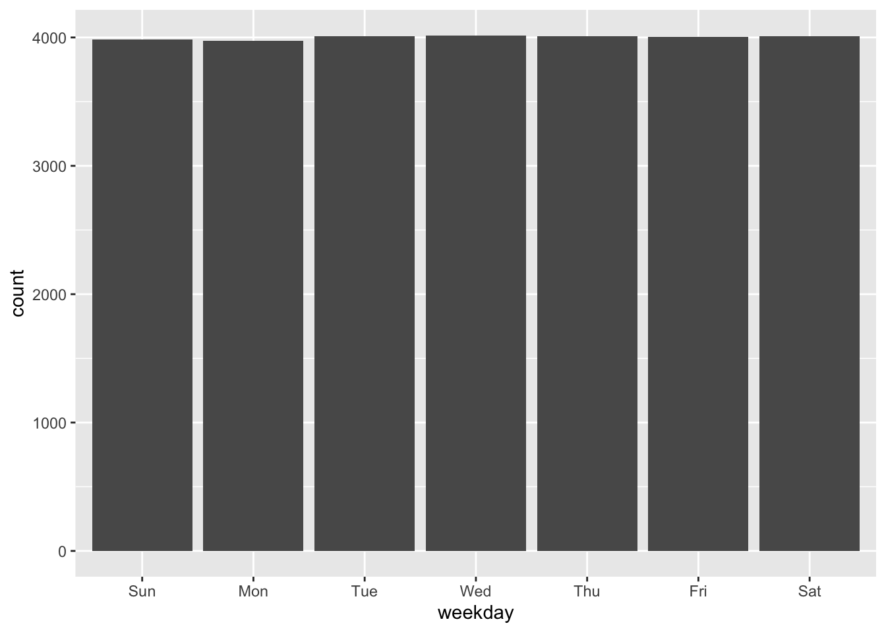

pacman::p_load(tidyverse,sf,tmap,arrow,lubridate)In-Class Exercise 2: Thematic Mapping and GeoVisualisation with R
welcome to my in-class exercise 2! we will explore the GrabPosisi data set & packages such as arrow, lubridate, etc in this exercise
1.0 Getting Started
we will use arrow, lubridate, tidyverse, tmap & sf in today’s in-class exercise!
- lubridate helps you to work with date & time
- arrow allows us to read parquet files
Question: Write a code chunk to load the R packages into R environment.
2.0 Import Grab-Posisi Dataset
Question: Write a code chunk to import part-00000-8bbff892-97d2-4011-9961-703e38972569.c000.snappy.parquet by using appropriate function of arrow package into R. Call the file df.
- To clarify: can’t just put part-0000 for some reason
df <- read_parquet("data/GrabPosisi/part-00000-8bbff892-97d2-4011-9961-703e38972569.c000.snappy.parquet")Question:
Write a code chunk to convert the data type of pingtimestamp from character to date-time.
- the date time is numerical & cant be easily understood
- this basically overwrites the df object
df$pingtimestamp <- as_datetime(df$pingtimestamp)Question: Write a code chunk to save the reformatted df into a new rds file called part0.rds. Save the output into a sub-folder call rds.
write_rds(df, "data/rds/part0.rds")3.0 Extracting Trip Staring Location
Question
- extracting trips’ origin locations.
- derive three new columns (i.e. variables) for weekday, starting hour and day of the month.
- name the output tibble data.frame origin_df.
- hint: use lubridate!
origin_df <- df %>%
group_by(trj_id) %>%
arrange(pingtimestamp) %>%
filter(row_number()==1) %>%
mutate(weekday = wday(pingtimestamp,
label=TRUE,
abbr=TRUE),
start_hr = factor(hour(pingtimestamp)),
day = factor(mday(pingtimestamp)))- call the df file
- %>% : pipe for formatting & avoid the code from truncating
- group_by() based on trajectory
- sort rows based on time stamp (by default its sorted in ascending order)
- every trajectory, we filter out the 1st row (the first trip will be the origin)
- mutute helps to derive new variables => weekday & start_hr & day
- wday will tell us if the timestamp is a weekday
- label=TRUE : true ensure the day is not displayed as a number?
- abbr=TRUE : abbrevation (eg: mon instead of monday)
- factor changes it to ordinal scale => order data
- hour will tell us the hour (and since this the first trip, it is the starting hour)
- mday will tell us the day
- wday will tell us if the timestamp is a weekday
4.0 Extracting Trip Ending Location
Question: Write a code chunk to extract trips’ destination locations. Similarly, derive the weekday, ending hour and day of the month columns.
dest_df <- df %>%
group_by(trj_id) %>%
arrange(desc(pingtimestamp)) %>% # instead of arranging in asc we arrange in desc (destination location trip time will be after the staring location)
filter(row_number()==1) %>%
mutate(weekday = wday(pingtimestamp,
label=TRUE,
abbr=TRUE),
end_hr = factor(hour(pingtimestamp)),
day = factor(mday(pingtimestamp)))- instead of arranging in asc we arrange in desc
- destination location trip time will be after the staring location
4.1 Save rds Object
- if we wanna ensure all our objects can be reused in rds format even if i export, save the rds!
- we set #| echo: false
- hides the code on the page
4.2 Import Data
because we saved the rds object, it is very easy to just import the data!
- i do not want to run 2.0,3.0 & 4.0 anymore => set to eval:false
- this ensure that the code is displayed but not run
origin_df <- read_rds("data/rds/origin_df.rds")
dest_df <- read_rds("data/rds/dest_df.rds")5.0 Visualising Frequency Distribution
Question:
we will need to use ggplot2 to create a bar chart that visualises the frequency distribution
ggplot(data=origin_df,
aes(x=weekday)) +
geom_bar()
How does the code work?
- ggplot()
- data=origin_df: specifies the datasetthat ggplot2 will use to build the plot (origin_df)
- aes(x=weekday): inside the
aes()(aesthetics) function, the x parameter is set to weekday. This means that the bar chart will be based on the weekday variable in the origin_df dataset, which likely represents days of the week.
- geom_bar(): adds a bar geometry to the plot, creating a bar chart. By default, geom_bar() counts the number of cases for each group (in this case, each unique value of weekday), and then plots the frequency of these counts.
6.0 Converting into sf tibble data.frame
Question:
origin_sf <- st_as_sf(origin_df,
coords = c("rawlng", "rawlat"),
crs = 4326) %>%
st_transform(crs = 3414)How does the code work?
st_as_sf(): this function from the sf is used to convert a standard data frame into a spatial data frame.origin_df: this is the original data frame that we want to convert into a spatial format.coords = c("rawlng", "rawlat"): specifies the columns in origin_df that contain the longitude (rawlng) and latitude (rawlat) coordinates. These columns are used to create the spatial geometry in the new sf data frame -crs = 4326: sets the Coordinate Reference System (CRS) to 4326, which is a common global latitude-longitude system (WGS 84).
st_transform(crs = 3414): this function is used to transform or reproject the spatial data into a different CRS. Here, the data is being transformed to CRS 3414 which typically corresponds to a specific local system.
7.0 Visualising as Point Symbol Map
Question:
tmap_mode("plot")
tm_shape(origin_sf) +
tm_dots()
tmap_mode("plot")tmap_mode(): sets the mode of tmap visualization."plot": used for creating static plots. tmap also has a “view” mode for interactive visualizations!
tm_shape(origin_sf)tm_shape(): sets the spatial data to be used for subsequent map layers.origin_sf: the spatial data frame (that we created in the previous step) that contains geographic information. This will form the basis of the map.
tm_dots()tm_dots(): adds a layer of points to the map. Each point represents a row in the origin_sf data frame, plotted according to its spatial coordinates (longitude and latitude). By default, tm_dots() uses simple dot symbols to represent each point.- The size, color, and other aesthetic properties of these dots can be customized, but in this basic form, it simply plots all points with a default style.
8.0 Importing Master Plan 2019 Planning Subzone Boundary (DIY)
Question: Using the step your learned from previous lesson, import Master Plan 2019 Subzone downloaded from data.Gov as sf tibble data.frame. Call the output mpsz2019.
mpsz2019 <- st_read("data/dataGov/MPSZ2019.kml") %>%
st_transform(crs = 3414)Reading layer `URA_MP19_SUBZONE_NO_SEA_PL' from data source
`/Users/noviaantony/Desktop/noviaantony/IS415-GAA/In-Class_Ex/In-Class_Ex02/data/dataGov/MPSZ2019.kml'
using driver `KML'
Simple feature collection with 332 features and 2 fields
Geometry type: MULTIPOLYGON
Dimension: XY, XYZ
Bounding box: xmin: 103.6057 ymin: 1.158699 xmax: 104.0885 ymax: 1.470775
z_range: zmin: 0 zmax: 0
Geodetic CRS: WGS 84D
Question: Using the step your learned, plot a point symbol map look similar to the figure below.
tm_shape(mpsz2019) +
tm_polygons() +
tm_shape(origin_sf) +
tm_dots()